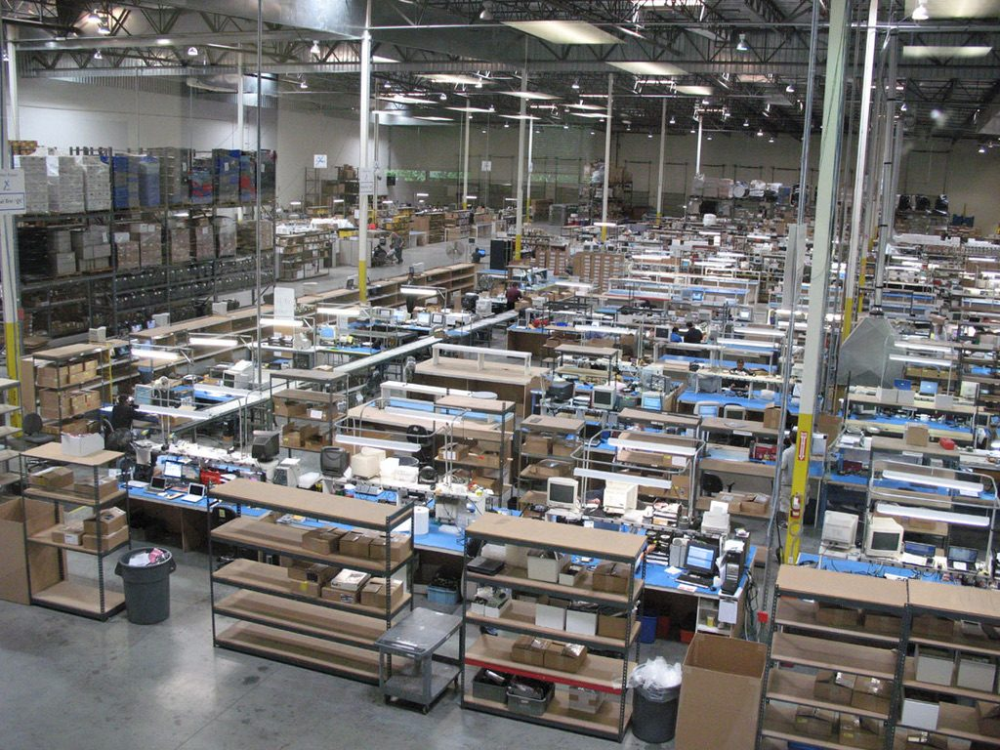
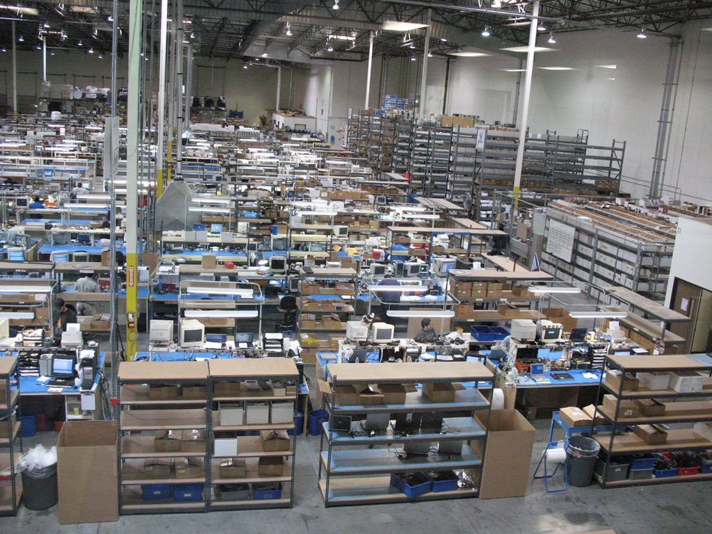

Annual revenue
Reached within six years of starting from zero.
Entrepreneurship & operations case study
A $15,000 personal investment — no private equity, no outside investors — became a $40 million multi-site technology services business that reached profitability in month three, made the Inc. 500 twice, and exited to an investment group.
Prior operating experience: Casey Jackson co-founded and led Computer Parts Unlimited and Nexicore Services as President & COO, 1991–2005. Sources: Casey Jackson resume and LinkedIn profile; Los Angeles Times historical profile. The $15,000 investment and absence of outside investors are founder-provided facts.
Results at a glance
The start
In 1991, Casey Jackson co-founded Computer Parts Unlimited (CPU) with a $15,000 personal investment. There were no private-equity investors or outside institutional backers funding the growth. The business had to generate cash, serve customers and finance its expansion through execution.
CPU focused on OEM computer service parts, distribution, depot repair, refurbishment and exchange. The operating challenge was not simply selling components; it was building the inventory, logistics, repair, technical-service and fulfillment infrastructure needed to support demanding enterprise customers at scale.
The company became profitable in month three. Within six years, the business had grown from zero to approximately $40 million in annual revenue.

The operating model
As President & COO, Jackson’s scope covered supply chain, inventory, repair logistics, technical service, fulfillment, vendor relationships and the operating P&L. Growth required those functions to operate as one system rather than as separate departments.
The company expanded into a four-site U.S. and Canadian operating footprint. SAP ERP and barcode-based inventory were implemented across the locations, creating a common operating platform for inventory and execution.
A 1999 Los Angeles Times profile independently documented the company’s expansion, describing nearly 200 employees and a planned move from a 40,000-square-foot facility into a 104,000-square-foot headquarters.
Acquisition & turnaround
Growth also included acquisition. Jackson led the integration and turnaround of a Toronto operation, bringing it onto the broader company’s operating model. The operation moved from approximately $1 million unprofitable to $5 million profitable.
That required more than a financial restructuring. The acquired operation had to be integrated into the company’s supply chain, systems, processes and management cadence so it could perform as part of the larger enterprise.
After building CPU and Nexicore Services from startup through national scale, Jackson negotiated the strategic sale of the business to an investment group — completing the progression from founder-funded startup to scaled enterprise and investor exit.

Before & after
$15,000 personal investment
Approximately $40M annual revenue
Startup operation
Four-site U.S. and Canadian footprint
Early parts business
Distribution, repair, refurbishment, exchange and national field service
Manual growth-stage processes
SAP ERP and barcode inventory across four locations
Acquired Toronto operation losing money
Turned into a $5M profitable operation
Private operating company
Strategic sale to an investment group
Business impact
Reached within six years of starting from zero.
Positive operating economics established early.
A national in-home repair line beyond distribution.
#32 in 1995 and #356 in 1996.
Key takeaway
Computer Parts Unlimited demonstrates the operating philosophy behind Built-N-AI today: identify the opportunity, build the process, use technology where it creates leverage, measure the economics, and scale what works. As the business grew, the challenge shifted from entrepreneurship to institutionalization — repeatable processes, management systems, technology, multi-site controls and leadership capable of supporting tens of millions of dollars in annual activity.
$15,000 invested. Profitable in month three. $40 million within six years. Four sites. Two Inc. 500 appearances. A strategic exit.